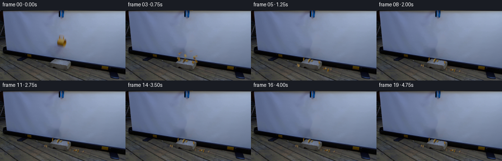
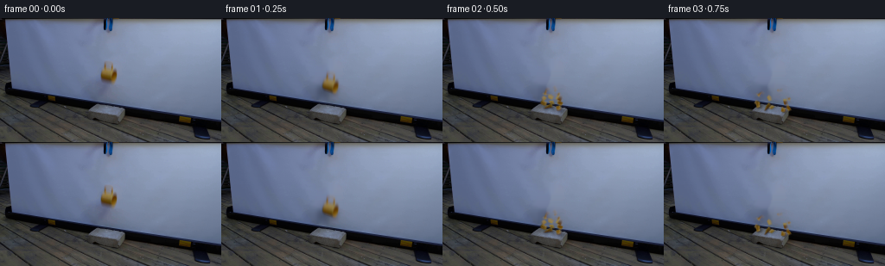

CODING AGENTS AS PIXEL WORLD MODELS
traex/GPT-6.1-Sol · 0126
点击播放 · 原生 RGB 像素
逐轮保存的候选
回放视频、检查图与代码变化。
每份候选均可单独播放。实际图片检查记录在下方工具轨迹中。
候选 01播放与检查图
点击播放 · 原生 RGB 像素


展开代码变化
--- 上一保存版本
+++ 本次保存版本
@@ -0,0 +1,232 @@
+from pathlib import Path
+import math
+import numpy as np
+import cv2
+from PIL import Image, ImageDraw
+from scipy.ndimage import gaussian_filter
+from scipy.spatial import Voronoi
+import artifact_io
+
+ROOT=Path(__file__).resolve().parent
+H,W=144,256
+
+def polygon_mask(poly, shape=(H,W), scale=4):
+ h,w=shape
+ p=Image.new('L',(w*scale,h*scale),0)
+ ImageDraw.Draw(p).polygon([(round(x*scale),round(y*scale)) for x,y in poly],fill=255)
+ return np.array(p.resize((w,h),Image.Resampling.LANCZOS)).astype(np.float32)/255
+
+
+def make_scene(src):
+ # The silhouette includes the elevated loop handle, but not its open hole.
+ outline=[(122,50),(128.7,50.5),(130.3,51.8),(130.7,56.8),
+ (132.2,58.2),(134.4,60),(135.1,64),(134.7,68.5),
+ (133.2,72.7),(131.1,74),(127.8,72.4),(119,69.8),
+ (117,68.1),(117.1,62),(118.1,59.9),(120.2,57.6),(120.5,52.5)]
+ shape=polygon_mask(outline)
+ hole=polygon_mask([(123,52.4),(128,52.5),(128.2,56.8),(123.1,56.5)])
+ shape=np.clip(shape-hole,0,1)
+ softshape=gaussian_filter(shape,.73)
+ # Remove the moving object and its down-left projection from the fixed screen.
+ remove=polygon_mask([(119,48.5),(134,49),(139,60),(139,76),(133,88),
+ (125,96),(110,94),(102,84),(101,73),(110,65),(114,55)])
+ hard=(remove>.1).astype(np.uint8)*255
+ bg=cv2.inpaint(src.astype(np.uint8),hard,6,cv2.INPAINT_NS).astype(np.float32)
+ # A small blend rim gives the unoccupied screen its original camera softness.
+ feather=gaussian_filter(hard.astype(np.float32)/255,.7)
+ clean=src*(1-feather[...,None])+bg*feather[...,None]
+ # Chroma-key only the ceramic, retaining the source glaze and cylindrical shading.
+ basechroma=clean[:,:,0]-clean[:,:,2]
+ chroma=src[:,:,0]-src[:,:,2]-basechroma
+ alpha=np.clip(chroma/110.,0,1)
+ alpha=np.minimum(alpha, np.clip(softshape*1.75,0,1))
+ alpha[softshape<.006]=0
+ alpha*=1-gaussian_filter(hole,.38)
+ # Keep the shaded back of the thin upper handle, which has very little yellow chroma.
+ handle=polygon_mask([(122,50.4),(129,50.7),(130.5,52.3),(130.4,56.5),(129,56.5),(128.6,52.7),(123,52.5),(122.3,57),(120.8,57),(121,52)])
+ alpha=np.maximum(alpha,gaussian_filter(handle,.6)*.30)
+ alpha=np.clip(alpha,0,1)
+ rgb=np.clip((src-clean*(1-alpha[...,None]))/np.maximum(alpha[...,None],.04),0,255)
+ # Foreground rgba is kept in floating-point premultiplied form for exact smooth warps.
+ prem=rgb*alpha[...,None]
+ return clean,alpha,prem,rgb
+
+
+def warp_layer(alpha,prem,M):
+ a=cv2.warpAffine(alpha,M,(W,H),flags=cv2.INTER_LINEAR,borderMode=cv2.BORDER_CONSTANT)
+ c=cv2.warpAffine(prem,M,(W,H),flags=cv2.INTER_LINEAR,borderMode=cv2.BORDER_CONSTANT)
+ return a,c
+
+
+def transform(center,position,angle=0,scale_x=1,scale_y=1):
+ c,s=math.cos(angle),math.sin(angle)
+ A=np.array([[c*scale_x,-s*scale_y],[s*scale_x,c*scale_y]],np.float32)
+ return np.column_stack((A,np.array(position)-A@np.array(center))).astype(np.float32)
+
+
+def composite(canvas,a,c):
+ return canvas*(1-a[...,None])+c
+
+
+def shadow(canvas, a, dx,dy,opacity=.12,sigma=2.0):
+ M=np.array([[1,0,dx],[0,1,dy]],np.float32)
+ sh=cv2.warpAffine(a,M,(W,H),flags=cv2.INTER_LINEAR)
+ sh=gaussian_filter(sh,sigma)*opacity
+ return canvas*(1-sh[...,None])
+
+
+def make_fragments(alpha,prem,rgb):
+ # Curved wall panels fracture irregularly; the thin handle breaks into three arcs.
+ cells=[[(116,59),(122,59),(123.1,63.4),(116,65)],
+ [(122,59),(129,59),(128.1,63.9),(123.1,63.4)],
+ [(129,59),(137,58),(137,65),(132,64.8),(128.1,63.9)],
+ [(116,65),(123.1,63.4),(124.4,68.1),(118,69.8),(114,69)],
+ [(123.1,63.4),(128.1,63.9),(129.2,68.4),(124.4,68.1)],
+ [(128.1,63.9),(132,64.8),(137,65),(137,70),(129.2,68.4)],
+ [(118,69.8),(124.4,68.1),(129.2,68.4),(128,73.2),(116,74)],
+ [(129.2,68.4),(137,70),(138,77),(128,77),(128,73.2)],
+ [(115,49),(125,49),(125,53.2),(123.2,59.2),(116,59)],
+ [(125,49),(137,49),(136,54.8),(128.5,54.8),(128.2,53.2),(125,53.2)],
+ [(128.5,54.8),(136,54.8),(137,59),(127,59)]]
+ raw=np.stack([polygon_mask(p) for p in cells])
+ raw/=np.maximum(raw.sum(0),1e-5)
+ rng=np.random.default_rng(1267)
+ pieces=[]
+ # Initial velocities in the image plane. The impact creates a low, asymmetric fan.
+ vel=[(-37,-29),(-12,-42),(24,-33),(-45,-22),(-6,-24),(34,-25),(-25,-18),(24,-14),(-34,-39),(13,-42),(42,-28)]
+ for k,mask in enumerate(raw):
+ a=alpha*mask
+ if a.sum()<.3:continue
+ yy,xx=np.indices(a.shape)
+ cx=float((xx*a).sum()/a.sum());cy=float((yy*a).sum()/a.sum())
+ c=prem*mask[...,None]
+ # Exposed ceramic edges: subtle buff-white fracture lines, never sparks or dust.
+ interior=cv2.erode((mask>.5).astype(np.uint8),np.ones((3,3),np.uint8)).astype(float)
+ seam=np.clip(mask-interior,0,1)*a*.24
+ c=c*(1-(seam/np.maximum(a,.001))[...,None])+seam[...,None]*np.array([151,131,86])
+ spin=rng.uniform(-8,8)
+ if abs(spin)<2:spin+=3
+ pieces.append(dict(alpha=a.astype(np.float32),prem=c.astype(np.float32),center=(cx,cy),vel=vel[k],spin=spin,k=k,
+ z0=max(0,(73-cy)*.75),rest=rng.uniform(-math.pi,math.pi),tilt=rng.uniform(.27,.65)))
+ return pieces
+
+
+def plane_y(x):
+ # Visible upper face of the concrete block, followed by the surrounding ground.
+ if 105<x<139:return 104.0+(x-121)*.21
+ return 119.0+(x-125)*.15
+
+
+def trajectory(p, s, impact_center=(126.2,96.1)):
+ cx,cy=p['center']
+ x=impact_center[0]+(cx-125.5)
+ # After fracture panels share the impact translation, then fall individually.
+ y=impact_center[1]+(cy-63)
+ vx,vy=p['vel']; angle=.10
+ g=220.0
+ dt=.003
+ steps=int(s/dt)
+ bounce=0
+ contact=False
+ angular=p['spin']
+ tilt=1.
+ for step in range(steps):
+ if not contact:
+ vy+=g*dt
+ x+=vx*dt;y+=vy*dt
+ angle+=angular*dt
+ tilt=1-.35*min((step*dt)/.7,1)
+ radius=1.35 if p['k']>=8 else 1.6
+ ground=plane_y(x)-radius
+ if y>=ground and vy>0:
+ y=ground
+ vy=-vy*(.27 if bounce==0 else .18)
+ vx*=.57;angular*=.57
+ bounce+=1
+ if abs(vy)<6 or bounce>=3:
+ contact=True;vy=0
+ else:
+ oldx=x
+ x+=vx*dt
+ vx*=math.exp(-5.8*dt)
+ # A panel that slides off the block drops to the floor instead of hovering.
+ newground=plane_y(x)-1.5
+ if newground>y+4:
+ contact=False;vy=3
+ else:y=newground
+ angular*=math.exp(-8*dt)
+ angle+=angular*dt
+ if contact:
+ # Only rotations toward the tabletop flatten the projected curved panel.
+ tilt=p['tilt']+(1-p['tilt'])*math.exp(-max(0,s-.3)*5)
+ return x,y,angle,tilt,contact
+
+
+def generate():
+ src=np.array(Image.open(ROOT/'first_frame.png').convert('RGB')).astype(np.float32)
+ clean,alpha,prem,rgb=make_scene(src)
+ pieces=make_fragments(alpha,prem,rgb)
+ frames=[src.astype(np.uint8)]
+ # The first source frame catches the cup immediately after release.
+ # Gravity accelerates it toward the brick; brittle impact follows within half a second.
+ impact=.405
+ center=(125.5,63.)
+ for i in range(1,20):
+ t=i/4
+ canvas=clean.copy()
+ if t<impact:
+ dy=202*t*t
+ dx=1.8*t
+ angle=.24*t
+ M=transform(center,(center[0]+dx,center[1]+dy),angle)
+ a,c=warp_layer(alpha,prem,M)
+ # The projection moves down the screen with the falling cup.
+ canvas=shadow(canvas,a,-6,7,.15,2.8)
+ canvas=shadow(canvas,a,1,4,.09,1.6)
+ # Short real shutter interval rather than exaggerated motion trails.
+ if t>.12:
+ aa=np.zeros_like(a);cc=np.zeros_like(c)
+ for off in [-.014,0,.014]:
+ tt=max(0,t+off)
+ mm=transform(center,(center[0]+1.8*tt,center[1]+202*tt*tt),.24*tt)
+ ai,ci=warp_layer(alpha,prem,mm);aa+=ai/3;cc+=ci/3
+ a,c=aa,cc
+ canvas=composite(canvas,a,c)
+ else:
+ s=t-impact
+ layers=[]
+ for p in pieces:
+ x,y,angle,tilt,contact=trajectory(p,s)
+ mm=transform(p['center'],(x,y),angle,1,tilt)
+ a,c=warp_layer(p['alpha'],p['prem'],mm)
+ # Changes of surface orientation modulate the same photographed glaze.
+ light=1+.08*math.sin(angle)*math.exp(-s*1.6)
+ c=np.clip(c*light,0,255)
+ if not contact and s<.5:
+ ap=np.zeros_like(a);cp=np.zeros_like(c)
+ for off in [-.010,0,.010]:
+ xx,yy,an,ti,co=trajectory(p,max(0,s+off))
+ aaa,ccc=warp_layer(p['alpha'],p['prem'],transform(p['center'],(xx,yy),an,1,ti))
+ ap+=aaa/3;cp+=ccc/3
+ a,c=ap,cp
+ layers.append((y,a,c,contact,x))
+ # Shadows stay on the receiver; their softness decreases as shards settle.
+ for y,a,c,contact,x in layers:
+ if contact:
+ canvas=shadow(canvas,a,1,1,.30,.65)
+ else:
+ gap=max(0,plane_y(x)-y)
+ cast=cv2.warpAffine(a,np.array([[1,0,2],[0,1,gap]],np.float32),(W,H))
+ sh=gaussian_filter(cast,.6+.035*gap)*(.17/(1+gap*.05))
+ canvas*=1-sh[...,None]
+ for y,a,c,contact,x in sorted(layers,key=lambda z:z[0]):
+ canvas=composite(canvas,a,c)
+ frames.append(np.clip(np.rint(canvas),0,255).astype(np.uint8))
+ frames=np.stack(frames)
+ artifact_io.save(frames,ROOT)
+ (ROOT/'.tmp').mkdir(exist_ok=True)
+ Image.fromarray(np.clip(clean,0,255).astype(np.uint8)).save(ROOT/'.tmp/background.png')
+ np.savez_compressed(ROOT/'.tmp/scene.npz',alpha=alpha,background=clean)
+ print('Saved',frames.shape,frames.dtype,'frame00 identical:',np.array_equal(frames[0],src.astype(np.uint8)))
+
+if __name__=='__main__':generate()
候选 02播放与检查图
点击播放 · 原生 RGB 像素
展开代码变化
--- 上一保存版本
+++ 本次保存版本
@@ -4,7 +4,6 @@
import cv2
from PIL import Image, ImageDraw
from scipy.ndimage import gaussian_filter
-from scipy.spatial import Voronoi
import artifact_io
ROOT=Path(__file__).resolve().parent
@@ -60,7 +59,10 @@
def transform(center,position,angle=0,scale_x=1,scale_y=1):
c,s=math.cos(angle),math.sin(angle)
- A=np.array([[c*scale_x,-s*scale_y],[s*scale_x,c*scale_y]],np.float32)
+ # Squash in the receiver plane (after rotation), not in shard-local axes.
+ A=np.array([[c*scale_x,-s*scale_x],[s*scale_y,c*scale_y]],np.float32)
+ if scale_y<.9:
+ A[1] += .21*(1-scale_y)*A[0]
return np.column_stack((A,np.array(position)-A@np.array(center))).astype(np.float32)
可观测工具轨迹
实际执行的命令与返回图片。
命令 1exit 0
/bin/bash -lc 'ls -la && cat prompt.txt && cat GENERATION_RULES.md'
命令 2exit 0
/bin/bash -lc "cat artifact_io.py && python - <<'PY'
from PIL import Image
import numpy as np
im=np.array(Image.open('first_frame.png'))
print('SHAPE', im.shape)
for y in range(0,144,4):
s=''
for x in range(0,256,4):
r,g,b=im[y:y+4,x:x+4,:3].mean((0,1))
if r>g*1.15 and g>b*1.25 and r>130:c='Y'
elif b>r*1.15 and b>g*1.1:c='B'
elif max(r,g,b)-min(r,g,b)>40:c='c'
elif (r+g+b)/3>230:c=' '
elif (r+g+b)/3>200:c='.'
elif (r+g+b)/3>160:c=':'
elif (r+g+b)/3>120:c='-'
elif (r+g+b)/3>80:c='='
elif (r+g+b)/3>40:c='*'
else:c='#'
s+=c
print(f'{y:3}',s)
PY"命令 3exit 0
/bin/bash -lc "python - <<'PY'
from PIL import Image
import numpy as np
im=np.array(Image.open('first_frame.png')); print(im.min((0,1)),im.max((0,1)))
for y in [0,5,10,20,40,50,55,60,65,70,75,80,90,100,110,120,130,140]:
print(y,[(x,tuple(im[y,x])) for x in [0,5,20,40,60,80,100,110,115,120,125,130,135,140,150,160,180,200,220,240,255]])
print('LUMINANCE')
chars='@%#*+=-:. '
gray=im.mean(2)
for y in range(0,144,2):
print(f'{y:3d}', ''.join(chars[min(9,int(gray[y:y+2,x:x+2].mean()/256*10))] for x in range(0,256,2)))
PY"命令 4exit 0
/bin/bash -lc "python - <<'PY'
from PIL import Image
import numpy as np
im=np.array(Image.open('first_frame.png')).astype(float)
for title,bounds in [('top',(110,0,140,23)),('mug',(108,47,143,83)),('brick',(90,94,151,125))]:
print('\\n',title)
x0,y0,x1,y1=bounds
for y in range(y0,y1):
line=''
for x in range(x0,x1):
r,g,b=im[y,x]; L=(r+g+b)/3
if r-b>50 and r>100: c='Y'
elif r-b>25: c='y'
elif r-b>8:c='o'
elif b-r>30 and L>110:c='.'
elif b-r>25 and L>85:c=','
elif b-r>18 and L>70:c=':'
elif b-r>10 and L>50:c='b'
elif b-r>8 and L>25:c='B'
elif L<15:c='@'
elif L<30:c='#'
elif L<45:c='8'
elif L<60:c='X'
elif L<75:c='x'
elif L<90:c='*'
elif L<110:c='+'
elif L<130:c='-'
else:c='='
line+=c
print(y,line)
if title"'!='"'brick':
for y in range(y0,y1,2):
print(y,[tuple(map(int,p)) for p in im[y,x0:x1]])
PY"命令 5exit 0
/bin/bash -lc "python - <<'PY'
import numpy as np
from PIL import Image
im=np.array(Image.open('first_frame.png')).astype(float)
print('warm pixel ranges')
for y in range(46,80):
ids=np.where((im[y,:,0]-im[y,:,2]>-8)&(np.arange(256)>110)&(np.arange(256)<143))[0]
print(y,[(int(x),tuple(im[y,x].astype(int))) for x in ids])
print('top dark region')
for y in range(0,25):
ids=np.where((im[y,:,0]<75)&(np.arange(256)>105)&(np.arange(256)<145))[0]
print(y,ids.tolist())
print('block color rows')
for y in range(96,124):
print(y,[(x,tuple(map(int,im[y,x]))) for x in range(100,144,3)])
PY"命令 6exit 0
/bin/bash -lc "python - <<'PY' import importlib.util for m in ['cv2','scipy','numpy','PIL']:print(m,importlib.util.find_spec(m) is not None) PY"
命令 7exit 0
/bin/bash -lc "python - <<'PY'
from PIL import Image
import numpy as np
im=np.asarray(Image.open('first_frame.png')).astype(float)
yy,xx=np.mgrid[:144,:256]
# fit screen local surface
valid=(xx>60)&(xx<190)&(yy>35)&(yy<100)&(yy<79+xx*.175)&~((xx>86)&(xx<146)&(yy>48)&(yy<98))
x=(xx-125)/65; y=(yy-70)/35
terms=[(i,j) for i in range(4) for j in range(4) if i+j<=4]
A=np.stack([x**i*y**j for i,j in terms],-1)
coef=np.linalg.lstsq(A[valid],im[valid],rcond=None)[0]; pred=A@coef
print('residual',np.std((pred-im)[valid],0))
for y in [50,60,70,80,90,95]:
print(y,[(x,im[y,x].astype(int).tolist(),pred[y,x].round().astype(int).tolist()) for x in [95,105,115,125,135,145]])
PY"命令 8exit 0
/bin/bash -lc "python - <<'PY'
import numpy as np
from PIL import Image
im=np.array(Image.open('first_frame.png')).astype(float)
for y in range(48,98,4):
print(y,[(x,np.round(im[y-1:y+2,x-2:x+3].mean((0,1))).astype(int).tolist()) for x in [78,88,94,100,106,112,118,124,130,136,142,148,154]])
PY"命令 9exit 0
/bin/bash -lc "python - <<'PY'
from PIL import Image
import numpy as np
im=np.array(Image.open('first_frame.png')).astype(float)
# inspect at finer color symbols blue background versus warm material, dark
for y in range(48,79):
print(f'{y:2d}', ''.join('Y' if p[0]-p[2]>45 else 'y' if p[0]-p[2]>20 else '+' if p[0]-p[2]>0 else '*' if p[0]-p[2]>-15 else '.' if p[0]-p[2]>-25 else ' ' for p in im[y,113:140]))
PY"命令 10exit 0
/bin/bash -lc "cat > generate.py <<'PY'
from pathlib import Path
import math
import numpy as np
import cv2
from PIL import Image, ImageDraw
from scipy.ndimage import gaussian_filter
from scipy.spatial import Voronoi
import artifact_io
ROOT=Path(__file__).resolve().parent
H,W=144,256
def polygon_mask(poly, shape=(H,W), scale=4):
h,w=shape
p=Image.new('L',(w*scale,h*scale),0)
ImageDraw.Draw(p).polygon([(round(x*scale),round(y*scale)) for x,y in poly],fill=255)
return np.array(p.resize((w,h),Image.Resampling.LANCZOS)).astype(np.float32)/255
def make_scene(src):
# The silhouette includes the elevated loop handle, but not its open hole.
outline=[(122,50),(128.7,50.5),(130.3,51.8),(130.7,56.8),
(132.2,58.2),(134.4,60),(135.1,64),(134.7,68.5),
(133.2,72.7),(131.1,74),(127.8,72.4),(119,69.8),
(117,68.1),(117.1,62),(118.1,59.9),(120.2,57.6),(120.5,52.5)]
shape=polygon_mask(outline)
hole=polygon_mask([(123,52.4),(128,52.5),(128.2,56.8),(123.1,56.5)])
shape=np.clip(shape-hole,0,1)
softshape=gaussian_filter(shape,.73)
# Remove the moving object and its down-left projection from the fixed screen.
remove=polygon_mask([(119,48.5),(134,49),(139,60),(139,76),(133,88),
(125,96),(110,94),(102,84),(101,73),(110,65),(114,55)])
hard=(remove>.1).astype(np.uint8)*255
bg=cv2.inpaint(src.astype(np.uint8),hard,6,cv2.INPAINT_NS).astype(np.float32)
# A small blend rim gives the unoccupied screen its original camera softness.
feather=gaussian_filter(hard.astype(np.float32)/255,.7)
clean=src*(1-feather[...,None])+bg*feather[...,None]
# Chroma-key only the ceramic, retaining the source glaze and cylindrical shading.
basechroma=clean[:,:,0]-clean[:,:,2]
chroma=src[:,:,0]-src[:,:,2]-basechroma
alpha=np.clip(chroma/110.,0,1)
alpha=np.minimum(alpha, np.clip(softshape*1.75,0,1))
alpha[softshape<.006]=0
alpha*=1-gaussian_filter(hole,.38)
# Keep the shaded back of the thin upper handle, which has very little yellow chroma.
handle=polygon_mask([(122,50.4),(129,50.7),(130.5,52.3),(130.4,56.5),(129,56.5),(128.6,52.7),(123,52.5),(122.3,57),(120.8,57),(121,52)])
alpha=np.maximum(alpha,gaussian_filter(handle,.6)*.30)
alpha=np.clip(alpha,0,1)
rgb=np.clip((src-clean*(1-alpha[...,None]))/np.maximum(alpha[...,None],.04),0,255)
# Foreground rgba is kept in floating-point premultiplied form for exact smooth warps.
prem=rgb*alpha[...,None]
return clean,alpha,prem,rgb
def warp_layer(alpha,prem,M):
a=cv2.warpAffine(alpha,M,(W,H),flags=cv2.INTER_LINEAR,borderMode=cv2.BORDER_CONSTANT)
c=cv2.warpAffine(prem,M,(W,H),flags=cv2.INTER_LINEAR,borderMode=cv2.BORDER_CONSTANT)
return a,c
def transform(center,position,angle=0,scale_x=1,scale_y=1):
c,s=math.cos(angle),math.sin(angle)
A=np.array([[c*scale_x,-s*scale_y],[s*scale_x,c*scale_y]],np.float32)
return np.column_stack((A,np.array(position)-A@np.array(center))).astype(np.float32)
def composite(canvas,a,c):
return canvas*(1-a[...,None])+c
def shadow(canvas, a, dx,dy,opacity=.12,sigma=2.0):
M=np.array([[1,0,dx],[0,1,dy]],np.float32)
sh=cv2.warpAffine(a,M,(W,H),flags=cv2.INTER_LINEAR)
sh=gaussian_filter(sh,sigma)*opacity
return canvas*(1-sh[...,None])
def make_fragments(alpha,prem,rgb):
# Curved wall panels fracture irregularly; the thin handle breaks into three arcs.
cells=[[(116,59),(122,59),(123.1,63.4),(116,65)],
[(122,59),(129,59),(128.1,63.9),(123.1,63.4)],
[(129,59),(137,58),(137,65),(132,64.8),(128.1,63.9)],
[(116,65),(123.1,63.4),(124.4,68.1),(118,69.8),(114,69)],
[(123.1,63.4),(128.1,63.9),(129.2,68.4),(124.4,68.1)],
[(128.1,63.9),(132,64.8),(137,65),(137,70),(129.2,68.4)],
[(118,69.8),(124.4,68.1),(129.2,68.4),(128,73.2),(116,74)],
[(129.2,68.4),(137,70),(138,77),(128,77),(128,73.2)],
[(115,49),(125,49),(125,53.2),(123.2,59.2),(116,59)],
[(125,49),(137,49),(136,54.8),(128.5,54.8),(128.2,53.2),(125,53.2)],
[(128.5,54.8),(136,54.8),(137,59),(127,59)]]
raw=np.stack([polygon_mask(p) for p in cells])
raw/=np.maximum(raw.sum(0),1e-5)
rng=np.random.default_rng(1267)
pieces=[]
# Initial velocities in the image plane. The impact creates a low, asymmetric fan.
vel=[(-37,-29),(-12,-42),(24,-33),(-45,-22),(-6,-24),(34,-25),(-25,-18),(24,-14),(-34,-39),(13,-42),(42,-28)]
for k,mask in enumerate(raw):
a=alpha*mask
if a.sum()<.3:continue
yy,xx=np.indices(a.shape)
cx=float((xx*a).sum()/a.sum());cy=float((yy*a).sum()/a.sum())
c=prem*mask[...,None]
# Exposed ceramic edges: subtle buff-white fracture lines, never sparks or dust.
interior=cv2.erode((mask>.5).astype(np.uint8),np.ones((3,3),np.uint8)).astype(float)
seam=np.clip(mask-interior,0,1)*a*.24
c=c*(1-(seam/np.maximum(a,.001))[...,None])+seam[...,None]*np.array([151,131,86])
spin=rng.uniform(-8,8)
if abs(spin)<2:spin+=3
pieces.append(dict(alpha=a.astype(np.float32),prem=c.astype(np.float32),center=(cx,cy),vel=vel[k],spin=spin,k=k,
z0=max(0,(73-cy)*.75),rest=rng.uniform(-math.pi,math.pi),tilt=rng.uniform(.27,.65)))
return pieces
def plane_y(x):
# Visible upper face of the concrete block, followed by the surrounding ground.
if 105<x<139:return 104.0+(x-121)*.21
return 119.0+(x-125)*.15
def trajectory(p, s, impact_center=(126.2,96.1)):
cx,cy=p['center']
x=impact_center[0]+(cx-125.5)
# After fracture panels share the impact translation, then fall individually.
y=impact_center[1]+(cy-63)
vx,vy=p['vel']; angle=.10
g=220.0
dt=.003
steps=int(s/dt)
bounce=0
contact=False
angular=p['spin']
tilt=1.
for step in range(steps):
if not contact:
vy+=g*dt
x+=vx*dt;y+=vy*dt
angle+=angular*dt
tilt=1-.35*min((step*dt)/.7,1)
radius=1.35 if p['k']>=8 else 1.6
ground=plane_y(x)-radius
if y>=ground and vy>0:
y=ground
vy=-vy*(.27 if bounce==0 else .18)
vx*=.57;angular*=.57
bounce+=1
if abs(vy)<6 or bounce>=3:
contact=True;vy=0
else:
oldx=x
x+=vx*dt
vx*=math.exp(-5.8*dt)
# A panel that slides off the block drops to the floor instead of hovering.
newground=plane_y(x)-1.5
if newground>y+4:
contact=False;vy=3
else:y=newground
angular*=math.exp(-8*dt)
angle+=angular*dt
if contact:
# Only rotations toward the tabletop flatten the projected curved panel.
tilt=p['tilt']+(1-p['tilt'])*math.exp(-max(0,s-.3)*5)
return x,y,angle,tilt,contact
def generate():
src=np.array(Image.open(ROOT/'first_frame.png').convert('RGB')).astype(np.float32)
clean,alpha,prem,rgb=make_scene(src)
pieces=make_fragments(alpha,prem,rgb)
frames=[src.astype(np.uint8)]
# The first source frame catches the cup immediately after release.
# Gravity accelerates it toward the brick; brittle impact follows within half a second.
impact=.405
center=(125.5,63.)
for i in range(1,20):
t=i/4
canvas=clean.copy()
if t<impact:
dy=202*t*t
dx=1.8*t
angle=.24*t
M=transform(center,(center[0]+dx,center[1]+dy),angle)
a,c=warp_layer(alpha,prem,M)
# The projection moves down the screen with the falling cup.
canvas=shadow(canvas,a,-6,7,.15,2.8)
canvas=shadow(canvas,a,1,4,.09,1.6)
# Short real shutter interval rather than exaggerated motion trails.
if t>.12:
aa=np.zeros_like(a);cc=np.zeros_like(c)
for off in [-.014,0,.014]:
tt=max(0,t+off)
mm=transform(center,(center[0]+1.8*tt,center[1]+202*tt*tt),.24*tt)
ai,ci=warp_layer(alpha,prem,mm);aa+=ai/3;cc+=ci/3
a,c=aa,cc
canvas=composite(canvas,a,c)
else:
s=t-impact
layers=[]
for p in pieces:
x,y,angle,tilt,contact=trajectory(p,s)
mm=transform(p['center'],(x,y),angle,1,tilt)
a,c=warp_layer(p['alpha'],p['prem'],mm)
# Changes of surface orientation modulate the same photographed glaze.
light=1+.08*math.sin(angle)*math.exp(-s*1.6)
c=np.clip(c*light,0,255)
if not contact and s<.5:
ap=np.zeros_like(a);cp=np.zeros_like(c)
for off in [-.010,0,.010]:
xx,yy,an,ti,co=trajectory(p,max(0,s+off))
aaa,ccc=warp_layer(p['alpha'],p['prem'],transform(p['center'],(xx,yy),an,1,ti))
ap+=aaa/3;cp+=ccc/3
a,c=ap,cp
layers.append((y,a,c,contact,x))
# Shadows stay on the receiver; their softness decreases as shards settle.
for y,a,c,contact,x in layers:
if contact:
canvas=shadow(canvas,a,1,1,.30,.65)
else:
gap=max(0,plane_y(x)-y)
cast=cv2.warpAffine(a,np.array([[1,0,2],[0,1,gap]],np.float32),(W,H))
sh=gaussian_filter(cast,.6+.035*gap)*(.17/(1+gap*.05))
canvas*=1-sh[...,None]
for y,a,c,contact,x in sorted(layers,key=lambda z:z[0]):
canvas=composite(canvas,a,c)
frames.append(np.clip(np.rint(canvas),0,255).astype(np.uint8))
frames=np.stack(frames)
artifact_io.save(frames,ROOT)
(ROOT/'.tmp').mkdir(exist_ok=True)
Image.fromarray(np.clip(clean,0,255).astype(np.uint8)).save(ROOT/'.tmp/background.png')
np.savez_compressed(ROOT/'.tmp/scene.npz',alpha=alpha,background=clean)
print('Saved',frames.shape,frames.dtype,'frame00 identical:',np.array_equal(frames[0],src.astype(np.uint8)))
if __name__=='__main__':generate()
PY
python generate.py"命令 11exit 0
/bin/bash -lc "python - <<'PY'
import numpy as np
from PIL import Image
for i in [0,1,2,3,4,6,10,19]:
im=np.array(Image.open(f'frames/{i:02d}.png')).astype(float)
print('\\nFRAME',i)
for y in range(45,132,2):
s=''
for x in range(85,162):
r,g,b=im[y,x];L=(r+g+b)/3
c='Y' if r-b>50 and r>90 else 'y' if r-b>25 and r>65 else 'o' if r-b>10 else '@' if L<18 else '#' if L<35 else '-' if L<60 else ':' if L<90 else '.' if L<120 else ' '
s+=c
if 'Y' in s or 'y' in s or (i<2 and 48<=y<=108):print(f'{y:3}',s)
bg=np.array(Image.open('.tmp/background.png')).astype(float)
diff=np.abs(im-bg).sum(2)>20
warm=(im[:,:,0]-im[:,:,2]>25)&(im[:,:,0]>65)&diff
inds=np.where(warm)
print('warm',len(inds[0]),'box',(min(inds[1]) if len(inds[0]) else None,max(inds[1]) if len(inds[0]) else None,min(inds[0]) if len(inds[0]) else None,max(inds[0]) if len(inds[0]) else None))
PY"命令 12exit 0
/bin/bash -lc "python - <<'PY'
from pathlib import Path
p=Path('generate.py')
s=p.read_text().replace('from scipy.spatial import Voronoi\\n','')
s=s.replace(' A=np.array([[c*scale_x,-s*scale_y],[s*scale_x,c*scale_y]],np.float32)',' # Squash in the receiver plane (after rotation), not in shard-local axes.\\n A=np.array([[c*scale_x,-s*scale_x],[s*scale_y,c*scale_y]],np.float32)\\n if scale_y<.9:\\n A[1] += .21*(1-scale_y)*A[0]')
p.write_text(s)
PY
python generate.py
python - <<'PY'
import generate as g
import numpy as np
from PIL import Image
s=np.array(Image.open('first_frame.png')).astype(np.float32)
bg,a,c,rgb=g.make_scene(s)
print('source alpha')
for y in range(49,78):
print(y,''.join(' ' if v<.01 else '.' if v<.2 else ':' if v<.4 else '*' if v<.6 else 'O' if v<.8 else '@' for v in a[y,114:139]))
print('Background removed pixels',np.sum(np.max(abs(bg-s),2)>5))
for y in [49,55,65,75,85,92,95]:
print(y,[(x,list(map(int,s[y,x])),list(map(int,bg[y,x]))) for x in [102,110,118,126,134,142]])
PY"命令 13exit 0
/bin/bash -lc "python - <<'PY'
from PIL import Image
import numpy as np
for i in [2,4,6,19]:
im=np.array(Image.open(f'frames/{i:02d}.png')).astype(float)
bg=np.array(Image.open('.tmp/background.png')).astype(float)
mask=(np.linalg.norm(im-bg,axis=2)>15)&(im[:,:,0]-im[:,:,2]>20)&(im[:,:,0]>60)
print('FRAME',i)
for y in range(83,134):
s=''.join('Y' if im[y,x,0]-im[y,x,2]>65 and mask[y,x] else 'y' if mask[y,x] else '.' if np.linalg.norm(im[y,x]-bg[y,x])>8 else ' ' for x in range(85,178))
if s.strip():print(y,s)
PY"命令 14exit 0
/bin/bash -lc "python - <<'PY'
import numpy as np
from PIL import Image
from pathlib import Path
files=sorted(Path('frames').glob('*.png'))
f=np.stack([np.asarray(Image.open(p).convert('RGB')) for p in files])
assert f.shape==(20,144,256,3)
assert f.dtype==np.uint8
assert np.array_equal(f[0],np.array(Image.open('first_frame.png').convert('RGB')))
t=np.load('pixels.npz')['pixels']
assert t.shape==(144,256,20)
print('Verified 20 RGB frames at 256x144; exact first-frame match.')
print('framewise changing pixels:',[(int(i),int(np.any(f[i]"'!=f[i-1],axis=2).sum())) for i in range(1,20)])
print('"'Artifacts:',[(p.name,p.stat().st_size) for p in [Path('pixels.npz'),Path('index.html'),Path('generate.py')]])
PY"保存候选 2 份；完成命令 14 次；可验证图片返回 0 张。原始 API 响应与完整日志保留在本地。